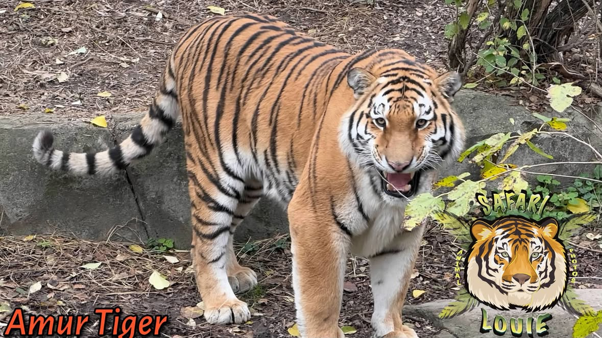

A Walk Around Columbus
Columbus Zoo & Aquarium · field notes
I took a regular walk around Columbus Zoo, helping my friend Josh Young with photos, and we ended up with twenty animals along the way. From an Amur tiger at the start to a pair of tawny frogmouths at the end, it was one of those walks where something new was around every corner. Here is the full walk, animal by animal.

A regular walk at Columbus, helping my friend Josh Young with photos — and twenty animals along the way.
The walk starts with an Amur tiger and a white-throated sparrow among red berries, then a Florida manatee underwater, a bonobo, a smooth-fronted caiman and Weber's sailfin lizard. Then a sand cat resting on straw, an Alaskan moose chewing leaves, two McCord's box turtles, and a spotted hyena on the grass.
And still more: an Aruba Island rattlesnake, a Reeve's muntjac, a cougar, a polar bear coming out of its den, two African cheetahs resting together, river otters in the water, a Mertens's water monitor, Anthony's poison arrow frog, a tentacled snake, and two tawny frogmouths on their branches.
I posted this walk on Facebook — see all 20 photos there → · same tour on Instagram